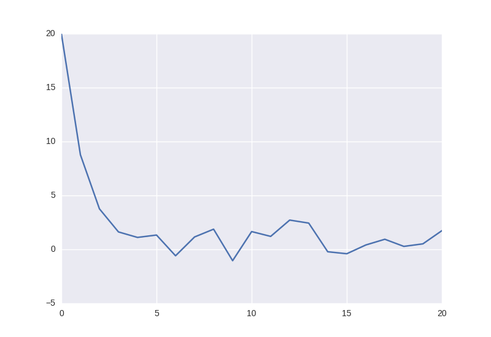

从入门谈起，ARIMA如何应用到时间序列分析中？
Table of Contents
本文由作者原创，未经允许禁止转载。联系marcnuth(AT)foxmail.com了解转载事宜。
1 基础概念
1.1 时间序列的平稳性(弱平稳)
1.1.1 定义
平稳性 在时间序列分析中是一个贯穿始终的概念，用不平稳的时间序列建模，可能会出现伪回归的现象。 怎么判断一个时间序列是否是平稳的？平稳性的定义如下:
- 时间序列的均值是与t无关的常数
- 时间数列的方差是与t无关的常数
- 时间序列协方差仅与时间差有关
以下的图给出了一些不平稳的时间序列:
另外，需要了解的是，白噪声是平稳的时间序列。
1.1.2 平稳性检验
DF检验/单位根检验:
在DF检验中，假设时间序列模型为: $$Y_t = \rho Y_{t-1} + \mu_t$$ 其中 \(\mu_t\) 为白噪声，做差分，可得: $$\Delta Y_t= (\rho - 1)Y_{t-1} + \mu_t = \delta Y_{t-1} + \mu_t, 其中 \Delta Y_t = Y_t - Y_{t-1}$$
因此可以看到，若\(\rho = 1 或 \delta = 0\)，则序列\(\Delta Y_t\) 是平稳的，我们称其为一阶平整过程，记做 \(I(1)\) 。 相应的，无需一阶差分即为平稳的序列记做 \(I(0)\) 。
更一般的，我们可以在上述模型上添加一个常数项，即： $$\Delta Y_t = \delta Y_{t-1} + \mu_t + \beta_1$$ 即为一个更一般的序列模型。
DF检验本质上就是基于上一模型对参数 ρ=1 或 δ=0 的假设检验。
ADF检验:
扩展DF检验中的序列模型，再差分项上增加一个趋势项，得到的序列模型如下: $$\Delta Y_t = \delta Y_{t-1} + \mu_t + \beta_1 + \beta_2 t$$ 其中, \(\beta_2\)是常数，t 是时间也称为趋势变量。如果误差项是自相关的，则模型等同于: $$\Delta Y_t = \delta Y_{t-1} + \alpha_i \sum_{i=1}^m \Delta Y_{t-i} + \beta_1 + \beta_2 t$$ 即为ADF检验的序列模型。
在python中可以使用statsmodels的adfuller来进行ADF检验。1 下面为一个简单的ADF检验的Python代码:
import statsmodels.api as sm
import numpy as np
print('=> test random data:')
print(sm.tsa.stattools.adfuller(np.random.randn(100)))
print('=> test sin:')
print(sm.tsa.stattools.adfuller(np.sin(range(100))))
print('=> test line:')
print(sm.tsa.stattools.adfuller(range(100)))
=> test random data:
(-10.649061528189115, 4.7125242187982921e-19, 0, 99, {'5%': -2.8912082118604681, '10%': -2.5825959973472097, '1%': -3.4981980821890981}, 248.67927084619444)
=> test sin:
(-20050428159241372.0, 0.0, 3, 96, {'5%': -2.8921519665075235, '10%': -2.5830997960069446, '1%': -3.5003788874873405}, -6145.6382792775457)
=> test line:
(1.8671227576372333, 0.99847325083384997, 9, 90, {'5%': -2.894232085048011, '10%': -2.5842101234567902, '1%': -3.5051901961591221}, -6469.5381959604356)
1.1.3 如何让时间序列变平稳
通常情况下，现实生活中的时间序列都是不平稳的。然而很多常用的时间序列分析算法都要求时间序列具备平稳性，为了应用这些算法，我们不得不将不平稳的时间序列变得平稳。 在思考如何解决这一问题之前，我们需要知道，究竟是什么使得时间序列不平稳呢？ 我们知道，在做时间序列分析的时候，任意一条时间序列数据都会被拆分成三个部分，它们分别是：
- 白噪声
- 趋势
- 季节性
显然白噪声不会影响序列的平稳性。因此， 影响序列平稳性的因素是趋势和季节性 。
如何去除序列中的趋势
假设一个时间序列: $$X_t = \epsilon_t + trend_t$$
要使得该时间序列平稳，即把 \(trend_t\) 从 \(X_t\) 中减掉即可。 因此问题变成如何寻找得到时间序列中的趋势？ 通常有如下一些办法：
- MA：移动平均。 即认为 \(trend_t = \frac{\sum_{i=t-k}^t X_i}{k}\)
- 聚合： 可以将数据按一段时间（一个月/一年）聚合，从而得到趋势
- 多项式拟合: 拟合一个多项式方程，认为其即为时间序列的趋势
在这些办法中，MA是最常用的一种办法。
如何去除序列中的季节性 去除季节性的办法通常有：
- 差分： 选取一个时间差k，对原序列做k阶差分
- 分解： 将序列的趋势和季节性都分解出来
差分是最常用的办法。 而关于分解的内容可以参考statsmodels中的季节性分解。2
1.2 随机游走
1.2.1 定义
随机游走序列的模型定义如下: $$X_t= X_{t-1} + \epsilon_t$$ 其中 \(\epsilon_t\) 表示t时刻的误差。 从上面模型可以看到，随机游走是这样一个序列，下一刻的值仅跟上一刻的取值相关。
是不是觉得这个等式相当眼熟？是的，这就是上一节中我们谈到一阶平稳过程的时候，给出的等式。所以请记住，随机游走序列的特点是：
- 当前时刻取值仅跟上一刻相关
- 是一阶平稳过程\(I(1)\)，即是 不平稳 序列
为了再次巩固 平稳性 的概念，我们来证明一下随机游走序列的不平稳性。
1.2.2 不平稳性的证明
1. 均值是否随时间变化?
将随机游走序列模型展开，有： $$X_t= X_{t-1} + \epsilon_t = X_0 + \sum_{i=0}^t \epsilon_i$$
因此，均值为: $$E(X_t) = E(X_0) + \sum_{i=0}^t E(\epsilon_i)$$
因为 \(\epsilon_i\) 为随机误差，因此其方差为0, 所以随机游走的方差即为 \(E(X_0)\)， 即为常数。 所以随机游走序列的均值是 不随时间变化的 。
2. 方差是否随时间变化？
随机游走的方差为： $$Var(X_t) = Var(X_0) + \sum_{i=0}^t Var(\epsilon_i) = 0 + t * \delta$$
由于 \(\delta\) 是随机噪声的方差，为常数，因此随机游走序列的 方差是随时间变化的 。
3. 协方差是否随时间变化？
通过上面2项，我们已经得知随机游走不是平稳序列了。所以这里就留给你证明吧。 提醒一下：
$$Cov(X_t, X_{t-k}) = E(X_t - E(X_t)) E(X_{t-k} - E(X_{t-k}))$$
1.3 ACF
ACF(auto correlation function): 即自相关方程。
ACF的定义为: $$ACF(k) = \frac{E[(X_t - \mu)(X_{t+k} - \mu)]}{\sigma^2} = \frac{E[(X_t - \mu)(X_{t+k} - \mu)]}{\sqrt{E(X_t - \mu)^2} \sqrt{E(X_{t+k} - \mu)^2}}$$
ACF函数的值域为[-1, 1]， 当值为0时，表示不相关，1表示正相关，-1表示负相关。另外，ACF函数是关于k=0对称的，即 ACF(k) = ACF(-k)。
假定序列X 平稳 ，我们可以定义样本自相关函数为： $$ACF(k) = \frac{\sum_{t=k+1}^n (X_t - \bar{X})(X_{t-k} - \bar{X})}{\sum_{t=1}^n (X_t - \bar{X})^2}$$
根据该样本自相关函数定义得到的图形即是常用的ACF相关图。
1.4 PACF
PACF(Partial autocorrelation function)： 即偏自相关函数。
引入PACF的原因是因为ACF虽然给出了K阶滞后项的相关性，但是这个相关性没有消除中间变量如\(X_{t+1} ... X_{t+K-1}\)的影响。3
因此，PACF的定义可以看作: $$PACF(k) = Corr(X_t - \beta1 X_{t-1} - ... - \beta_{k-1} Y_{t-k+1}, X_{t-k} - \beta_1 X_{t-k+1} - ... - \beta_{k-1} X_{t-1})$$
2 ARIMA 模型
2.1 介绍
ARIMA(Auto-Regressive Integrated Moving Averages)，称为自回归积分移动平均模型，主要由三部分构成：
- AR模型： 需要 参数p 作为模型滞后项的计数。比如，若p=3,则\(X(t)\)将由\(X(t-1), X(t-2), X(t-3)\) 预测得到。
- MA模型： 需要 参数q 作为误差滞后项的计数。比如，若q=3,则\(X(t)\)将由\(e(t-1), e(t-2), e(t-3)\) 预测得到，其中\(e(i)\)是移动平均后第i个值。
- 差分的阶数: 需要 参数i 。 ARIMA模型需要差分的原因是因为AR模型和MA模型要求时间序列是平稳的！
2.1.1 AR模型
AR模型是自回归模型，其核心思想即当前值依赖于之前的值。其序列模型如下： $$AR(p): X_t = \sum_{i=1}^p \alpha_i * X_{t-i} + \epsilon_t$$
是不是觉得这个模型相当熟悉？是的，当 \(\alpha = 1\)的时候，即为随机游走的模型。 所以在这里，值得一提的是， AR模型并不总是平稳的!
下面生成了一个\(p = 1 且 \alpha = 0.5\) 的 AR(1) 模型：

2.1.2 MA模型
MA模型是移动平均模型，其模型和AR模型类似，不过MA强调的是，当前项可以基于过去的 误差项 求得，即: $$MA(q): X_t = \sum_{i=0}^q \beta_i \epsilon_{t-i} $$
值得注意的是，与AR不同， MA模型总是平稳的 。4
下图是 \(\beta=0.5\) 的MA模型:

对比AR和MA的两个图，你将发现，在MA模型中，值下降的很快，也就是说，随着时间的迁移，受噪声的影响迅速减小。
2.1.3 差分项
前面提到， AR模型和MA模型应用前，都要求时间序列是平稳的。所以理所当然的，组合AR和MA之后的模型： ARMA模型也要求时间序列是平稳的，换句话说， ARMA是对平稳时间序列进行建模的办法。
然而现实中大多时间序列是不平稳的，而之前我们也提到过，将不平稳时间序列变化为平稳时间序列的最常用的办法就是差分，而集合了差分项的ARMA模型即是我们谈到的ARIMA模型。 因此， ARIMA是对不平稳时间序列进行建模的办法。
2.2 ARIMA模型调参指南
ARIMA(p, d, q) 的参数为p、q和d。其中p为AR模型的参数，q为MA模型的参数，d为差分的阶数。
2.2.1 d: 差分阶数选取
差分阶数的选取可以遵循一下规则5:
- 如果该序列的ACF图没有衰减并逼近0, 那么该序列需要再做差分。
- 如果该序列的ACF(1)是0或者负数，或所有都是比较小并且无模式，则该序列不需要进行差分。如果该序列的ACF(1)比-0.5更小，那么该序列可能过度差分了， 注意这种情况 。
- 差分的最优阶数，通常是差分后序列标准差最小的一个。
- d=0时，即原序列是平稳的；d=1时，即序列的趋势是均等的；d=2时，即序列的趋势是随时间变化的。
- d=0时，一般序列有一个常量项使得均值不为0；d=1时，序列的趋势中包含一个常数项；d=2时，序列模型中通常没有常数项。
前面这5条规则可以帮助你从 可视化的角度 来判断一个序列是否需要差分或者被过度差分了。 事实上，我们可以使用之前讲过的平稳性检验来检测序列的平稳性，以判断是否需要差分。 另外，有些情况下，可能试验了多个d的取值后仍旧不能把序列变得平稳。这种时候，可以先试一下用其他办法，比如先对时间序列取log之后再进行差分阶数的选取。
2.2.2 p: AR模型参数的选取
对于 AR(p) 模型， 理想情况下， k > p 时， PACF=0, 即 PACF在p项后截断 ， 因此可根据PACF函数的截断项来确定一个初始的p值。
2.2.3 q: MA模型参数的选取
在 MA(q) 模型中，对于其序列的ACF图，可以发现，理想情况下当k>q时，ACF = 0， 即ACF在q项后截断。 因此，可根据ACF函数的截断项来确定一个初始的q值。
Footnotes:
《时间序列分析：R 语言》第6章 6.2 偏自相关函数和扩展的自相关函数